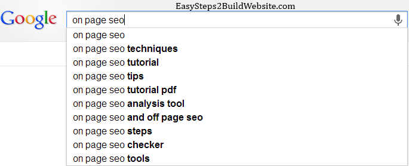
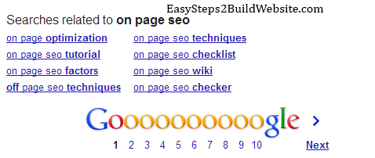
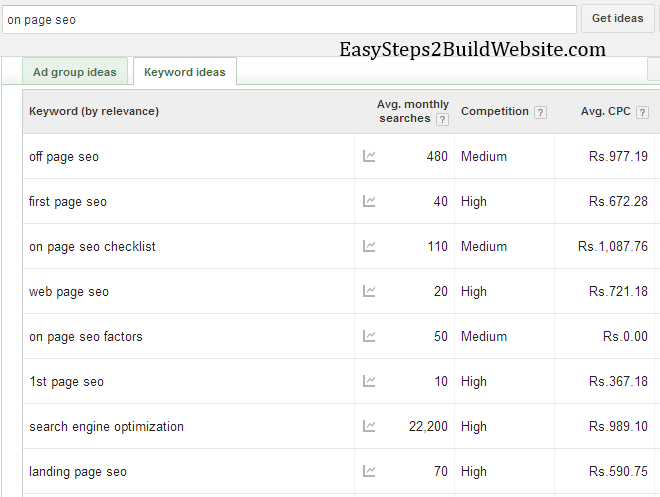
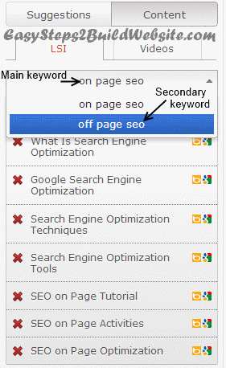

Latent semantic indexing keywords (or LSI keywords) are nothing but SEO terms for related keywords or synonyms. In this Article I will cover basic aspects of Why we should use LSI keywords in an article and How to use them.
Quick Links:
What Are LSI Keywords?
As I mentioned above this is just a SEO term for related, similar or synonyms words. Before this term has came into picture the only thing to determine relevancy of article was keyword density. Which means if your post is about “abc” and you have used it 10 times throughout the article than your competitor needs to use it 11 time to beat your position in Google search, but let me ask you, is it fair?? Same Thing applies for search engine, instead of taking high keyword density into consideration, search engine bot looks for related keywords (Latent semantic indexing keywords) throughout the article. It doesn’t mean that we shouldn’t maintain keyword density for target keyword in our article, but over optimization can cause issues. I usually keep it between 1- 3 %.
LSI makes a lot of sense too. For example – Search engine discovers a page with the word “Apple” on it, how does it differentiate whether the Apple is a fruit, Apple is a brand or Apple is name of any pet? It uses Latent semantic indexing keywords, if there are words like fruit, taste, flavor in the article then it would be easy for search engine to determine that the article is all about the “Apple fruit”. Hence in this example fruit, taste and flavor can be termed as LSI keywords for keyword “Apple”.
LSI and SEO
Search engines like Google are always looking for a relevant most content for a particular search query. It’s really a tough task for a search engine to determine what the content is all about, it uses LSI terms to judge the relevancy of an article or a webpage. For our understanding we can say that using them increases the ranking in search engine but the actual process is much more complex and difficult to comprehend.
Let’s not divert from the point, we were talking about the kind of words or terms it expects in the content (The use of LSI keywords are not only limited to content it has few other useful usage, which can skyrocket your ranking, more on it in the next section)
let’s say: the particular content is about “on page SEO” so the following terms can be found in the content. You can call them LSI keywords for main keyword On page SEO
on page optimization
on page seo factors
off page seo techniques
on page seo techniques
on page seo checklist
Research: How to find LSI keywords?
LSI keywords tools
1) Google search –
Note: In the images below, you would find that the watermark text is: easysteps2buildwebsite.com, it is because when this post was published back in 2012, the site name was easysteps2buildwebsite.com, it has been changed to beginnersbook.com since 2013.

As you can see, one of the best and free tool to find LSI is the Google search itself. When you write a key term in search query field, it automatically fetches and shows the keywords related to the particular query.
Same can be viewed in the search results –

2) Google Keyword Planner tool –
Google keyword tool used to be the good resource of these keywords but sadly it has been replaced by keyword planner tool – Below screenshot has been taken from planner tool, which shows LSI keywords along with competition and CPC.

3) http://lsikeywords.com/
Update: This site no longer works.
This seems to be a good tool, Here you can provide the keyword or key phrase and within few minutes it would show you the LSI keywords being used in the top 5 (you can customize it as per the need: website has a drop-down to change this value) search results. The reason I have mentioned it at third place is because it also shows you the terms which are nowhere related to the query, which means it can mislead to a novice user or a beginner. First two tools are rock solid ways to get them so go with them. More at how to find LSI keywords.
Here is the alternative of lsikeywords.com: http://lsigraph.com/
WordPress plugins for finding LSI keywords
There are two premium plugins which can be used to find them.
1) SEOPressor – This is one of the best SEO plugin and it provides the feature of fetching the LSI keywords for upto 3 keywords. Why it’s my top choice? It provides the most relevant LSIs fetched using Bing API and it gives you over optimization warning when you overuse these words on a post/article/page. This is such a useful feature because most of the times we got to know the LSI but how much we should use is difficult to know, in such cases this plugin is a savior. More about it can be found here at SEOPressor review.

Few related posts:
2) EasyWPSEO plugin –
It is the another plugin which provides LSI terms. You can find great reviews about this plugin when you Google it but as per me it is the worst plugin in terms of support and help. It is kind of a copycat of seopressor and it’s features are nowhere near to the seopressor and you should not expect any support from the author of plugin if you buy it. It’s not even worth mentioning here.
Where to use LSI?
Use of Related Keywords (LSI) for On Page SEO
Place to use:
- In content, title, heading, highlighted words (As per the need and stay away from over optimization).
- Can be used as an anchor text while interlinking to a particular post/page – Use the LSI keywords to vary things rather than using the same anchor text over and over again.
- Can also be used as external links anchor text.
Latent semantic indexing keywords became one of the Google ranking factors because, to Google it looks much more natural to use related keywords instead of repeating the same keyword over and over again.
Keyword stuffing, or repeating the same keyword over and over on your page in order to rank well doesn’t work, like it used to work before. It can actually get you in trouble these days because it looks manipulative, fake and spammy.
Using latent semantic indexing keywords for on page SEO is quite simple. I already carried out it here. My target keyword for this post is LSI Keywords. I have used it in important places like title, headings and meta description. I have used related terms like Latent Semantic Indexing, link building, on page SEO and search engine. Even word “related keywords” is a related keyword.
Use of Related Keywords (LSI) for Off Page SEO
While building backlinks, Mix up your anchors. Use Latent semantic indexing keywords as well as your target keyword in anchor text.
Use LSI keywords while commenting on other blogs of same niche, through it’s hard because most of the blogs doesn’t allow keywords in name field. Better option is to go for comment Luv enabled blogs, which can give you a quality dofollow link.
Before winding up the post, I just want to share few tips, which works even after Panda and Penguin.
- Don’t build thousands of links overnight, instead try to build few quality backlinks daily. It will be good for SEO, which can help you to achieve good page rank. At the same time help you to rank better for the particular keyword used in anchor.
- Write a quality content and use related keywords throughout the article.
- Use Target keyword in title, Header tags and in meta description.
- Maintain a keyword density of 1-3% for focus keyword and try to do the same for other related keywords.
- Build Good connection with other bloggers, by giving few quality comments on their articles.
- There are couple of good articles on this topic, you can find them at What Is Latent Semantic Indexing and LSI and SEO.
Over to you
I have covered where to find, how to find and where to use, however my first advise to you is that never overdo anything, rather write quality content for users, you will automatically end up in having these keywords once you are done with the article. All of the key points, tips and tricks will hold good if you are writing unique and quality content, which is complete in all sense, it may sound to be a difficult task but you can try your best, rest you can leave it on Google :D.
Reference:
Read more at Wikipedia about Latent semantic indexing.
In some ways freebies help we know it. Very interesting article that you’ve posted. Found the views to be quite informative and intriguing. Thanks for sharing.
Glad to know that you liked it. Thanks for the comment Tran!
Chaitanya you have covered this in simple and plain English. People often try to maintain Keyword density like 3-5%, but a good practice is keep a density of 1.25-1.5% and use LSI words… I used to use this plugin call EasyWpSEO, which used to show LSI words, sadly it doesn’t work anymore. SEOPressor 5 is coming up with this new feature….
Hey Harsh, Even I am using the EasyWpSeo plugin, you would be surprised to know that I bought this plugin because you were recommending it. But as you said It doesn’t show LSI keywords anymore. Chris is going to release an update at the end of this month, hope that will fix this LSI issue. Have a good day.
got new word LSI :)
really i never heard this word before
thanks for such a valuable info.
I was wondering where the LSI tool was hiding. Google use to have one that I used often and just a couple of weeks ago I could not find it. Why the big change with the backlinking .. Google making it tougher. I am so green to backlinking using anything other than my keywords for anchor text. This going to take some getting use to.
I also heard that building a profile in forum unrelated to your niche, theme or keyword is really no good. Is that true?
Great post
Kim D.
Good to know it bro. I was looking for long for one good LSI keyword finding tool, your mentioned lsikeywords.com site seem interesting. I am also using Easy WP SEO plugin for long.
There are 3 formula for counting keyword density in EasyWPSEO under settings> miscellaneous settings. Could you pls mention which one you are using to count keyword density? Thanks.
Hi Taswir,
I’ve selected the third one ((Total Keywords / (Total Words – (Total Keywords * (Total Words In Keyword Phrase – 1)))) * 100).
Thanks for the comment!
I just stumbled upon the term LSI Keyword and didn’t know what it was. This was a perfect article explaining it, and giving an insight of how to use it to do SEO. Thanks alot :)
Nice article about LSI & SEO. You have covered almost all the aspects about LSI in SEO. I have found another useful article –
latent semantic indexing – SEO
Hi Ashish, Good to hear that you liked it. Of course the source given by you is useful. Thanks for sharing the link. These keywords are really useful in order to boost webpage ranking in search engine by improving search engine optimization(SEO).
That was a great post. I was actually wondering what these lsi keywords means. I had thought they were some kind of high premium keywords pretty difficult to rank for. In fact my first guess was inclined towards the google adwords. But, your post simplified the things to me. Thanks for that.
You have also solved one of my primary concerns regarding the unique content generation. Now with this technique I can get many ideas which can be built upon and content created around them. In fact, the most challenging jobs for any blogger is to come out with great content each and every time and keep his audience happy.
Thanks for the post.
thanks for sharing the usefull information about seo and lsi..as seo is really important for business and promotion..thanks for the precise info…thanks
Im using SEOPressor that built already with LSI function, so it easy for me
Great content. It is helpful for everyone to understand the all logic’s behind ranking top in the search history of google. much needed topic to all bloggers. i really thank you very much.
Hi Jagan, Thank you for the kind words :)
This is the first post that has even a single line with useful information.
When it came in my information, I go through a number of articles and grab information and usages from there. I always follow LSI keywords technique, but while I was reading this blog, I feel I never find such kind well managed information over LSI.
Thanks a lot it is very useful blog for those who have doubts for LSI keywords.
Hey Chaitanya,
Great post, thanks for the useful information!
However, soon there may be a Penguin 3.0 coming out so it will be interesting to see how that will change the playing field, I hope not too much!
Best,
Steve
This has been one of the best and easiest to understand explanation of keywords that I have read. Even as somewhat of a novice, I found it easy to understand.
i have spent more than 3 months as a blogger now and have discovered this word first time in my SEO search :) . Anyways this is really a key concept and the explanation to the concept is really great. You have give the example of the same blog that you are writing upon. This makes it great and easy to Understand.
I have one different question in mind, i have heard a lot about writing long length articles for better optimization but does writing extra long article like 2000+ words have negative a impact ?? Or it is just a one way ride, write as large as you can.
How do i use LSI in inter linking? As i am using it for offpage SEO.
For wordpress based websites/blogs “EasyWpSEO” plugin is the best way to get a list of LSI in a particular post.Also we can get an idea for the LSI form Google autosearch results.
Hi Chai,
A very informative article on Latent Semantic Indexing (aka LSI) keywords.
I have been using EasyWPSEO plugin to search for LSI keywords for long. But was not very much aware about the whole concept. It is until today when I have started searching for some info on that & landed to your post.
You have made the concept very easy to understand. Thanks for sharing.
It will be great if you can highlight on the topic whether we can depend on EasyWPSEO plugin on current context or not.
i came to this site after searching on the Google “what is LSI” and truly there were other sites also on the first page but there was no site that has a post about LSI like Your Post. You have explained many things in just a single post and done a great job. In Future I will be looking at your website if, I have to get any information about new things.
Very Useful Post! Chaitnaya…
I want to that other tools such as long tail pro and Google’s free keyword planner tool are also useful in searching about LSI keywords for our blog as i haven’t used the expensive long tail pro tool for my blog publhising business…
Regards
Vickie.
Great Articles, You simple explained the use of LSL keywords. I am new to this term but now i am sure that i’ll use it on my blog. The plugin you mentioned I have used earlier but that time I was unable to understand its importance but now i will use it again. Thank you so much once again. You also mentioned about keyword density but i am still confused:
1. What keyword Density should be for ‘focus keyword’ and ‘Lsl Keyword’?
2. Is it okay if I use more than one ‘LSL keyword’ for a single post?
Please answer me as soon as possible, Looking forward for your reply. It will be a great favor. Thanks once again.